Configure SAML with OneLogin#
The following process provides steps to configure SAML 2.0 with OneLogin for Mattermost.
Before you begin#
Before you begin, you need generate encryption certificates for encrypting the SAML connection.
You can use the Bash script from the
mattermost/docsrepository on GitHub, or any other suitable method.Save the two files that are generated. They are the private key and the public key. In the System Console, they are referred to as the Service Provider Private Key and the Service Provider Public Certificate respectively.
Create a OneLogin connection app for Mattermost SSO#
Add a SAML test connector app.
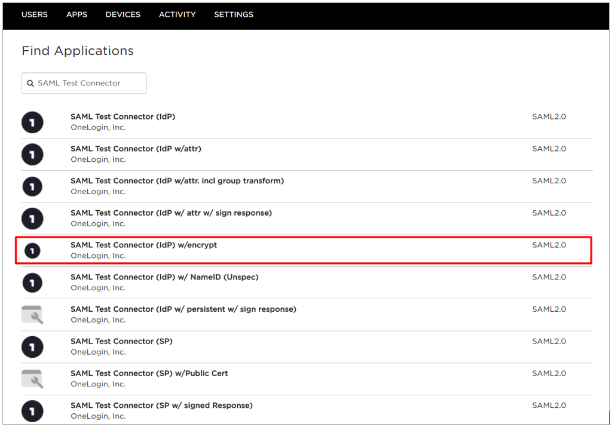
Log in to OneLogin as an administrator.
Go to Apps > Add Apps.
Search for “SAML Test Connector”, then select SAML Test Connector (Advanced).
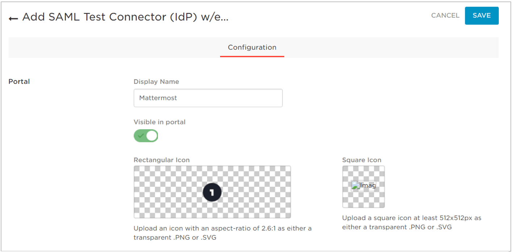
In the Display Name field, enter a name for the application, then optionally upload an app icon. You can use the Mattermost logo for the icon, which you can download from Branding Guidelines page.
Make sure that the Visible in portal option is enabled.
Select Save.
Configure the app.
Select the Configuration tab, then enter the following values:
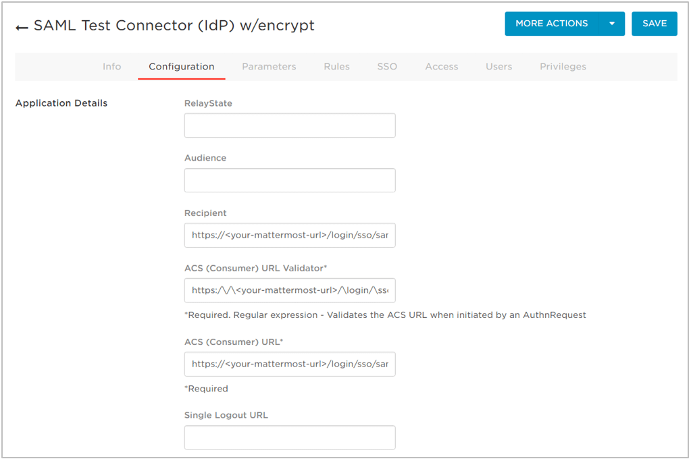
RelayState: leave blank
Audience: leave blank
Recipient:
https://<your-mattermost-url>/login/sso/samlwherehttps://<your-mattermost-url>should typically match the Mattermost Site URL.ACS (Consumer) URL Validator:
https:\/\/<your-mattermost-url>\/login\/sso\/samlACS (Consumer) URL:
https://<your-mattermost-url>/login/sso/saml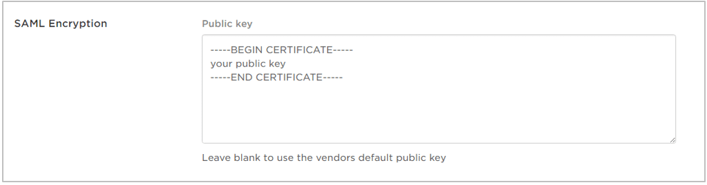
In System Console, enable encryption, then select Save. You’re redirected to the Info tab. From there, select the Configuration tab to access the SAML Encryption field.
Paste the Public Key that you generated earlier into the SAML Encryption field at the bottom of the page. This field displays in OneLogin only when encryption is enabled in Mattermost.
Select Save.
Enter the attribute parameters. The following attributes are recommended:
Name |
Value |
|---|---|
ID |
UUID |
FirstName |
First Name |
LastName |
Last Name |
Name ID value |
|
Username |
Username |
Attribute parameters map attributes between OneLogin and Mattermost. For more information on which attributes are configurable, see our documentation on SAML configuration settings.
Email attributes are required. For Mattermost servers running version 3.3 and earlier,
FirstNameandLastNameattributes are also required.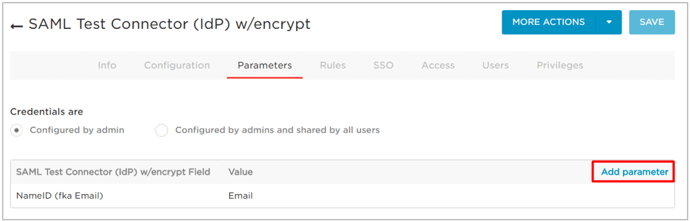
Select the Parameters tab.
Select Add Parameter.
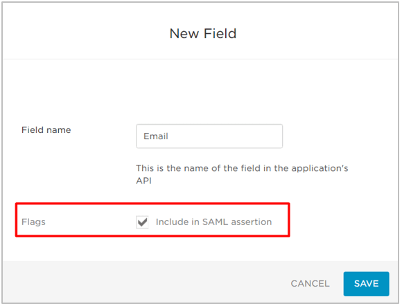
In the Field name field, enter an attribute parameter such as
Select the Include in SAML assertion checkbox.
Select Save.
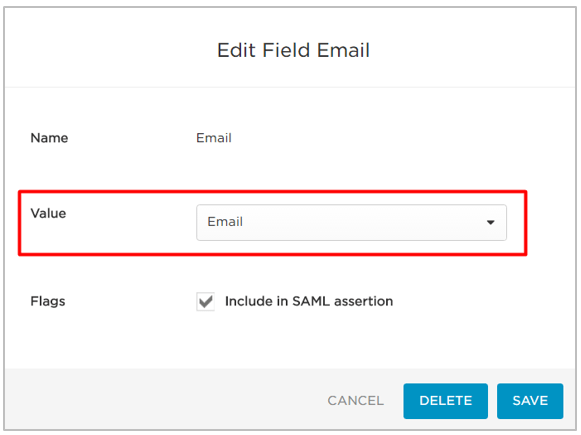
Select Edit.
In the Value field, select the OneLogin value that corresponds to the attribute parameter.
Repeat the steps above to add any other attributes that you need. After you’ve added all the attributes you want to use, the parameter list should look similar to the following image:
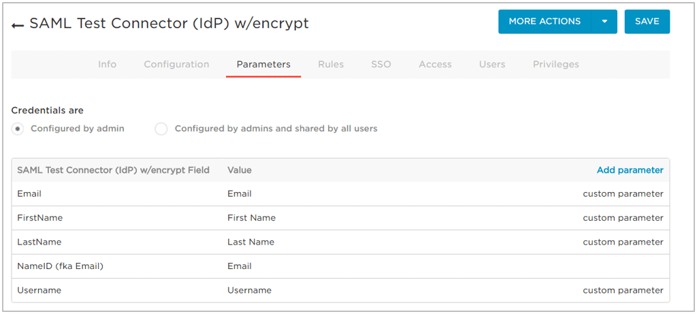
Copy the SSO information.
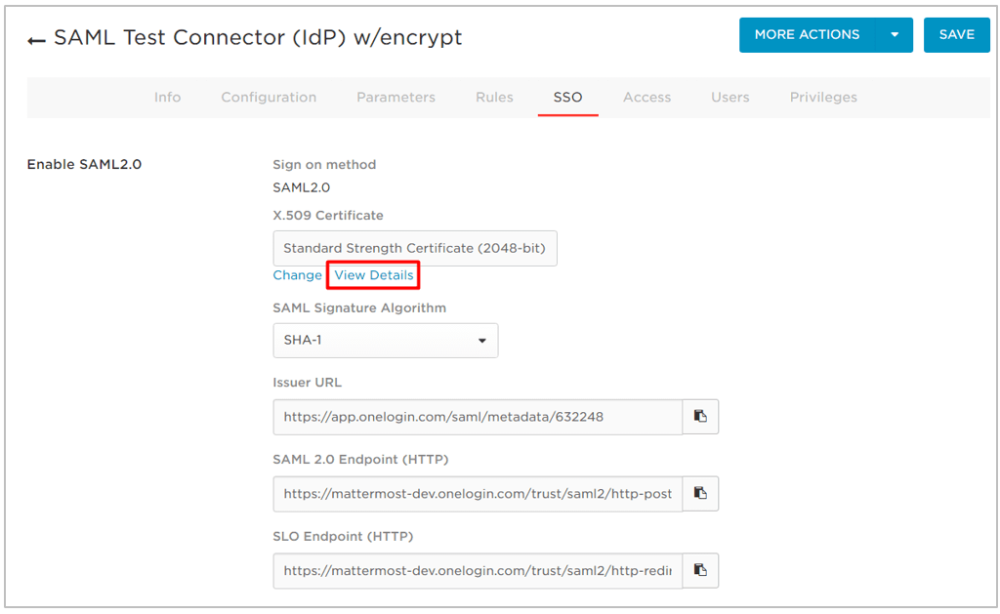
Select the SSO tab.
Copy the values in the Issuer URL and SAML 2.0 Endpoint (HTTP) fields, then save them for later use.
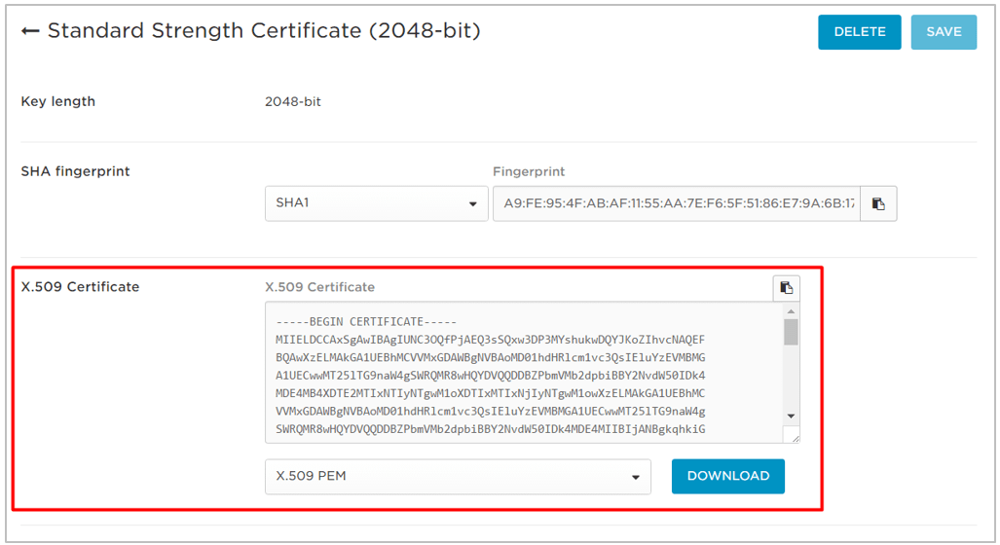
Select View Details to view the X.509 certificate.
Make sure that the X.509 PEM option is selected in the drop-down.
Select DOWNLOAD, then save the file in a convenient location for later use.
Save all your changes.
Configure SAML Sign-On for Mattermost#
Start the Mattermost server, then log in to Mattermost as a System Administrator. Go to System Console > Authentication > SAML.
Enter the OneLogin Issuer URL into the Identity Provider Metadata URL field.
Select Get SAML Metadata from IdP to download the metadata.
Configure Mattermost to verify the signature.
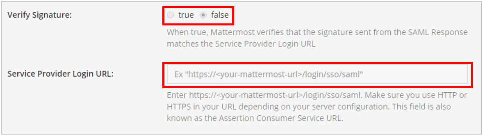
In the Verify Signature field, select True.
In the Service Provider Login URL, enter
https//<your-mattermost-url>/login/sso/saml.
Configure Mattermost to sign SAML requests using the Service Provider Private Key.
Enable encryption.
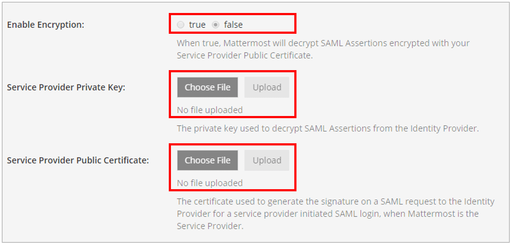
In the Enable Encryption field, select True.
In the Service Provider Private Key field, upload the private key that you generated earlier.
In the Service Provider Public Certificate field, upload the public key that you generated earlier.
Set attributes for the SAML Assertions, which are used for updating user information in Mattermost.
The Email Atttribute field and the Username Attribute field are required, and should match the values that you entered earlier when you configured the SAML Test Connector on OneLogin.
For Mattermost servers running version 3.3 and earlier,
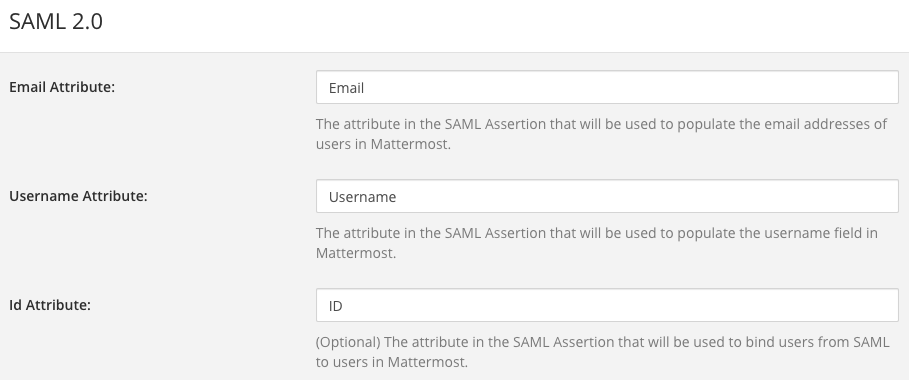FirstNameandLastNameattributes are also required.
(Optional) Customize the login button text.
Select Save.
(Optional) If you configured
First NameAttribute andLast NameAttribute, go to System Console > Site Configuration > Users and Teams, then set Teammate Name Display to Show first and last name. This is recommended for a better user experience.
To confirm that SAML SSO is successfully enabled, switch your System Administrator account from email to SAML-based authentication from your profile picture via Profile > Security > Sign-in Method > Switch to SAML SSO, then log in with your SAML credentials to complete the switch.
We also recommend that you post an announcement to your users detailing how the migration will work.
You can also configure SAML for OneLogin by editing the config.json file to enable SAML based on SAML configuration settings. You must restart the Mattermost server for the changes to take effect.
Configure SAML synchronization with AD/LDAP#
In addition to configuring SAML sign-in, you can optionally configure synchronizing SAML accounts with AD/LDAP. When configured:
Mattermost queries AD/LDAP for relevant account information and updates SAML accounts based on changes to attributes (first name, last name, and nickname)
Accounts disabled in AD/LDAP are made inactive in Mattermost, and their active sessions are revoked once Mattermost synchronizes attributes.
To configure SAML synchronization with AD/LDAP:
Go to System Console > Authentication > SAML 2.0, then set Enable Synchronizing SAML Accounts With AD/LDAP to true.
Go to System Console > Authentication > AD/LDAP, then set Enable Synchronization with AD/LDAP to true.
To ignore guest users when sychronizing, go to System Console > Authentication > SAML 2.0, then set Ignore Guest Users when Synchronizing with AD/LDAP to true.
Set the rest of the AD/LDAP settings based on configuration settings documentation to connect Mattermost with your AD/LDAP server.
If you don’t want to enable AD/LDAP sign-in, go to System Console > Authentication > AD/LDAP, then set Enable sign-in with AD/LDAP to false.
To specify how often Mattermost synchronizes SAML user accounts with AD/LDAP, go to System Console > Authentication > AD/LDAP, then set a Synchronization Interval in minutes. The default setting is 60 minutes. If you want to synchronize immediately after disabling an account, select AD/LDAP Synchronize Now.
To confirm that Mattermost can successfully connect to your AD/LDAP server, go to System Console > Authentication > AD/LDAP, then select AD/LDAP Test.
Once the synchronization with AD/LDAP is enabled, user attributes are synchronized with AD/LDAP based on their email address. If a user with a given email address doesn’t have an AD/LDAP account, they will be deactivated in Mattermost on the next AD/LDAP sync.
To re-activate the account:
Add the user to your AD/LDAP server.
Purge all caches in Mattermost by going to System Console > Environment > Web Server, then select Purge All Caches.
Run AD/LDAP synchronization by going to System Console > Authentication > AD/LDAP, then select AD/LDAP Synchronize Now.
Purge all caches again in Mattermost by going to System Console > Environment > Web Server, then select Purge All Caches again. This re-activates the account in Mattermost.
Note
If a user is deactivated from AD/LDAP, they will be deactivated in Mattermost on the next sync. They will be shown as “Inactive†in the System Console users list, all of their sessions will expire and they won’t be able to log back in to Mattermost.
If a user is deactivated from SAML, their session won’t expire until they’re deactivated from AD/LDAP. However, they won’t be able to log back in to Mattermost.
Note
SAML synchronization with AD/LDAP is designed to pull user attributes such as first name and last name from your AD/LDAP, not to control authentication.
In particular, the user filter cannot be used to control who can log in to Mattermost, this should be controlled by your SAML service provider’s group permissions.
See technical description of SAML synchronization with AD/LDAP for more details.
Override SAML data with AD/LDAP data#
Alternatively, you can choose to override SAML bind data with AD/LDAP information. For more information on binding a user with the SAML ID Attribute, please refer to this documentation.
This process overrides SAML email address with AD/LDAP email address data or SAML Id Attribute with AD/LDAP Id Attribute if configured. We recommend using this configuration with the SAML ID Attribute to help ensure new users are not created when the email address changes for a user.
To ensure existing user accounts do not get disabled in this process, ensure the SAML IDs match the LDAP IDs by exporting data from both systems and comparing the ID data. Mapping ID Attributes for both AD/LDAP and SAML within Mattermost to fields that hold the same data will ensure the IDs match as well.
Set the SAML
Id Attributeby going to System Console > Authentication > SAML 2.0 > Id Attribute.Set System Console > Authentication > SAML 2.0 > Override SAML bind data with AD/LDAP information to true.
Set System Console > Authentication > SAML 2.0 > Enable Synchronizing SAML Accounts With AD/LDAP to true.
Run AD/LDAP sync by going to System Console > Authentication > AD/LDAP, then select AD/LDAP Synchronize Now.
Frequently Asked Questions#
How to bind authentication to Id attribute instead of email#
Alternatively, you can use an Id attribute instead of email to bind the user. We recommend choosing an ID that is unique and will not change over time.
Configuring with an Id attribute allows you to reuse an email address for a new user without the old user’s information being exposed. For instance, if a user with an email address joe.smith@mattermost.com was once an employee, a new employee named Joe Smith can use the same email. This configuration is also useful when a user’s name changes and their email needs to be updated.
This process was designed with backwards compatibility to email binding. Here is the process applied to new account creations and to accounts logging in after the configuration:
A user authenticated with SAML is bound to the SAML service user using the Id Attribute (as long as it has been configured) or bound by email using the email received from SAML.
When the user tries to login and the SAML server responds with a valid authentication, then the server uses the “Id†field of the SAML authentication to search the user.
If a user bound to that ID already exists, it logs in as that user.
If a user bound to that ID does not exist, it will search base on the email.
If a user bound to the email exists, it logs in with email and updates the autentication data to the ID, instead of the email.
If a user bound to the ID or email does not exist, it will create a new Mattermost account bound to the SAML account by ID and will allow the user to log in.
Note
Existing accounts won’t update until they log in to the server.
Can SAML via Microsoft ADFS be configured with Integrated Windows Authentication (IWA)?#
Yes. IWA is supported on the browser, with support added to iOS and Android mobile apps in Q2/2019 (mobile apps v1.18 and later).
However, IWA is not supported on the Mattermost Desktop Apps due to a limitation in Electron. As a workaround you may create a browser desktop shortcut for quick access to Mattermost, just like a Desktop App.
Can I provision and deprovision users who log in via SAML?#
Yes, but this relies on AD/LDAP to do so. Currently, we do not support SCIM. See “How do I deactivate users?†for more information.
How do I migrate users from one authentication method (e.g. email) to SAML?#
See the mmctl user migrate-auth command documentation for details.
How is SAML different from OAuth 2.0 and OpenId Connect?#
OAuth 2.0 was primarily intended for delegated authorization, where an app is authorized to access resources, such as Google contact list. It doesn’t deal with authentication.
OpenID Connect is built on top of OAuth 2.0, which supports authentication and thus direct SSO.
SAML is like OpenID Connect, except typically used in enterprise settings. OpenID Connect is more common in consumer websites and web/mobile apps.
Learn more at https://hackernoon.com/demystifying-oauth-2-0-and-openid-connect-and-saml-12aa4cf9fdba.